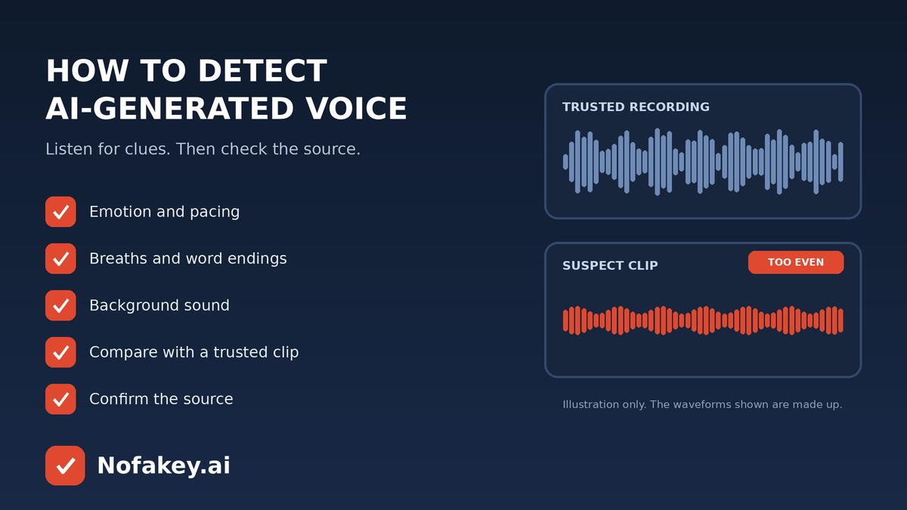

That voice message sounds like your favourite creator. That news clip sounds like a politician. That customer care call sounds a little too smooth. AI voices now show up in podcasts, voice notes, ads, videos and phone calls, and not all of them are labelled. This short guide shows what to listen for, how to compare a voice with a real recording, and why checking the source usually tells you more than your ears can.
8 clues to listen for
| Clue | What it can sound like |
|---|---|
| 1. Flat or mismatched emotion | Words about shock or joy delivered in an even tone, or feeling that doesn’t build naturally |
| 2. Too-perfect pacing | A steady rhythm with no hesitations, restarts, “um”s or natural stumbles |
| 3. Missing or odd breaths | No audible breathing, or breaths in places a person wouldn’t pause |
| 4. Strange word endings | Clipped, blurred or slightly robotic ends of words, especially names and numbers |
| 5. Odd stress and pronunciation | Emphasis on the wrong word, or a place name or technical term said unnaturally |
| 6. Metallic or watery tone | A faint buzz, echo or “underwater” quality in some syllables |
| 7. Background that doesn’t fit | Room sound that stays identical or suddenly changes when the voice does |
| 8. Doesn’t react | On a call, it ignores interruptions, repeats lines or avoids simple questions |
One odd moment can come from a bad microphone or a weak connection. Several together are worth taking seriously. And remember: a clean, natural-sounding voice can still be fake.
Compare with a real recording
If a voice claims to be a known person, use a trusted recording as your baseline.
- Find a real sample from an official channel, such as a verified interview or talk.
- Listen back to back with headphones. Note speech speed, accent, breathing and favourite phrases.
- Check the content. Would this person really say this, in this way, in this place?
- Look for the original. A real statement usually has a full recording and coverage elsewhere.
Check the source, not just the sound
- Who posted it first? Anonymous or brand-new accounts are a warning sign.
- Is there a longer version, or only a short, polished clip?
- Do trusted outlets or the person’s own channels confirm it?
- What does it want from you? A shocking claim, a share, money or a code should make you more careful.
- Is a video attached? Voices are often paired with fake visuals. See how to know if a video is AI generated.
What about detector tools?
Some tools score a short clip for how likely it is synthetic. They can be a helpful extra clue, but they can miss new voices, struggle with noisy or compressed audio, and wrongly flag real speech. They also need a recording, so they don’t help on a live call. Our guide to the free deepfake audio detector explains the limits in more detail, and are AI detectors accurate? covers the wider picture.
If it’s a call or a voice note asking for something
When the voice wants money, codes or secrecy, skip the sound test. Hang up, call back on a saved number, and ask a question only the real person would know. Our guide to the AI voice clone scam has the full routine. If a message or link came with the audio, paste it into our free checker for a quick first read. It checks messages and links, not audio files.
Frequently asked questions
Can you tell if a voice is AI generated by listening?
Sometimes, but not reliably. Flat emotion, odd pacing, missing breaths and strange word endings can be clues, yet modern voices can sound very natural. Combine listening with checking the source and context.
What does an AI-generated voice sound like?
It may sound slightly too smooth, evenly paced or emotionally flat, with unnatural pauses, odd stress on words or a faint metallic tone. A good one may sound completely normal.
How do I compare a suspicious voice with the real person?
Find a recording you trust from an official source and compare speech rhythm, accent, breathing, favourite phrases and background sound. Differences are a clue, not proof.
Can background noise hide an AI voice?
Yes. Noise, music, phone compression and poor connections can mask the usual clues, and can also make real voices sound odd. Treat noisy audio with extra caution.
What is the best way to confirm a voice is real?
Verify outside the audio itself: find the original source, check whether trusted outlets or the person’s official channels confirm it, and for calls, hang up and call back on a number you already have.
Conclusion
You don’t need golden ears. Listen for a cluster of small clues, compare with a trusted recording, and always confirm through the source. When the answer is “can’t tell yet,” don’t share it and don’t act on it. Find more guides on the Nofakey.ai blog.
Got a suspicious message, link or email to check?
Run it through the checker